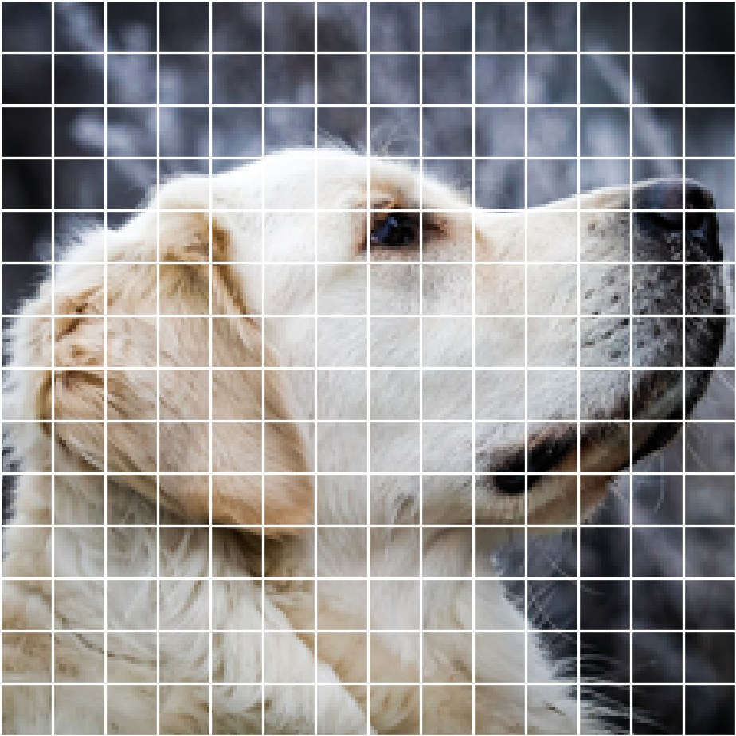
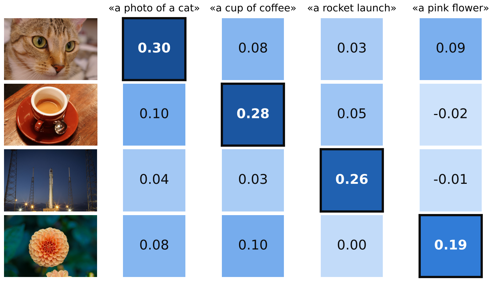
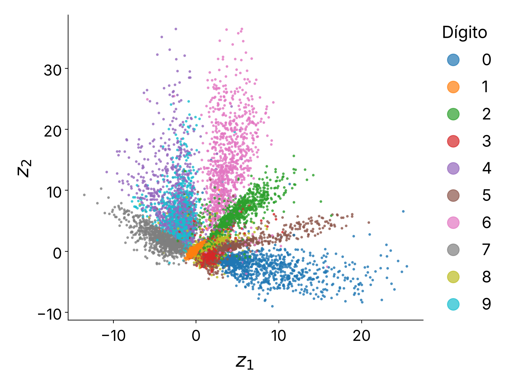

| Arquitectura | Qué supone | Le va bien con |
|---|---|---|
| Red densa | Nada: todo se conecta con todo | Datos en tabla |
| CNN | Lo cercano está relacionado | Imágenes |
| RNN | El orden importa, paso a paso | Texto, series de tiempo |
| Transformer | Casi nada: aprende las relaciones | Texto, imágenes con muchos datos |
Suponer menos da más flexibilidad, pero exige muchos más datos.
| Idea | Qué resuelve |
|---|---|
| ReLU en lugar de sigmoide | Su derivada vale 1 para entradas positivas: no achica el gradiente |
| Inicialización adecuada | La señal empieza con la escala correcta en cada capa |
| Normalización | Mantiene media 0 y desviación 1 capa tras capa |
| Conexiones residuales | Dan al gradiente un camino directo hacia las primeras capas |
| El optimizador Adam | Ajusta el paso de cada peso por separado: aun con gradientes pequeños, avanza |
Si el gradiente explota en lugar de apagarse, se recorta.
Entrenas un Transformer de texto con oraciones de distinto largo y batches pequeños. ¿Qué normalización usas?
Por eso también funcionan con audio y series de tiempo, no solo con imágenes.
Congela la red y úsala como extractor de características. Entrena solo el clasificador.
Ajuste fino: descongela y entrena todo con una tasa de aprendizaje baja.
YOLO predice todas las cajas en una sola pasada. U-Net recupera el detalle con conexiones de salto. La caja y la confianza de la detección son ilustrativas.
¿Por qué YOLO es mucho más rápido que Faster R-CNN?
rey − hombre + mujer ≈ reina
word2vec aprende cada embedding prediciendo palabras a partir de su contexto: las palabras con contextos parecidos quedan cerca.
Su límite: un solo vector por palabra. «Banco» es el mismo en el parque y en el dinero.


Quieres buscar en tu galería, que no tiene etiquetas, las fotos de «un perro en la playa». ¿Qué usas?

| Modelo | Idea | Fuerza | Limitación |
|---|---|---|---|
| VAE | El encoder produce una distribución, no un punto | Latente ordenado y muestreable | Imágenes borrosas |
| GAN | Un generador compite contra un discriminador | Imágenes nítidas en una pasada | Inestable; colapso de modo |
| Difusión | Una red aprende a quitar ruido paso a paso | Calidad y variedad | Muchos pasos para generar |
Las ideas se mezclan: Stable Diffusion hace la difusión dentro del espacio latente de un autoencoder.
En una GAN ya entrenada, ¿qué recibe el generador para crear una imagen nueva?
Qué hacer: cada equipo toma un caso, elige la arquitectura y prepara una razón de 30 segundos.
Modalidad: en equipos
Antes de responder, el modelo busca los documentos más parecidos a la pregunta, comparando embeddings, y los usa como contexto. Así responde con información actual o privada que no vio al entrenar.
Se congela el modelo y se entrenan solo dos matrices pequeñas por capa, cuyo producto se suma a los pesos. Se ajusta una fracción mínima de los parámetros.
| Sistema | Piezas que ya viste |
|---|---|
| ChatGPT, Claude, Gemini | Transformer decodificador, máscara causal, embeddings, normalización, conexiones residuales y Adam |
| Stable Diffusion | Difusión en el espacio latente de un autoencoder, U-Net con conexiones de salto y el codificador de texto de CLIP |
| YOLO-World | YOLO más los embeddings de texto de CLIP: detecta lo que le pidas con palabras |
Nota: estas diapositivas se elaboraron con ayuda de inteligencia artificial, específicamente Claude Opus 5.5 (Anthropic).